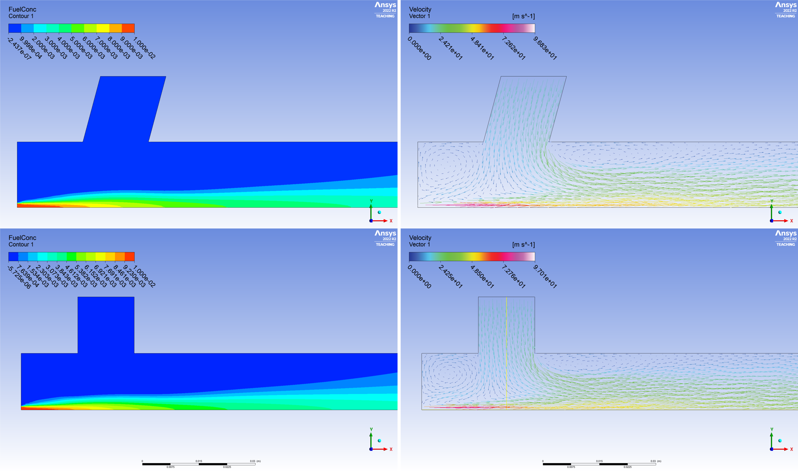

👋 Hi, I'm Arshia
I'm an engineer and software developer with a PhD from the University of Waterloo. My research was on two-fluid models for dispersed multiphase flows. I showed that a physically justified laminar dispersion closure adds particle-scale physics that standard models leave out and suppresses the mesh-dependent instability of earlier two-fluid models. I validated the models against oil–water pipe-flow and bubble-column experiments. I have also simulated industrial equipment, including bioreactors, gas–liquid separators and combustors, in OpenFOAM and Ansys CFX.
I write my own solvers in Python and C++. My PhD code is a high-order discontinuous Galerkin solver in Python, part of the open-source OpenCMP framework. More recently I wrote a C++ flow solver that runs in parallel on CPU clusters and GPUs with MPI, OpenMP, CUDA and HIP.
Skills
Hover over a skill to see where I used it; click to open those projects.
DG Solver for the Euler–Euler Two-Fluid Model
Two-fluid model for dispersed flows with H(div)/L² spaces, bound preservation and adaptive implicit time stepping.
Implemented in OpenCMP.
OpenCMP on GitHub →An Incompressible Navier–Stokes Solver Tuned for CPU Clusters and GPUs
C++17 SIMPLE solver with OpenMP, hybrid MPI+OpenMP to 8 nodes (9.2×), and one GPU source for AMD MI300A and NVIDIA H100, bit-identical to the CPU.
A Differentiable Lattice Boltzmann Solver for Inverse Problems and Learned Physics
Differentiable 2D lattice Boltzmann solver in PyTorch: recovers viscosity, reshapes an obstacle for less drag, and trains a neural collision operator.
DG Solver for Cahn–Hilliard Navier–Stokes
Two immiscible fluids separated by a diffuse interface, high-order DG in NGSolve.
View on GitHub →DG Solver for the Cahn–Hilliard Equation
Spinodal decomposition with adaptive mesh refinement from a Zienkiewicz–Zhu error estimator.
View on GitHub →DG Slope Limiters for High-Order Schemes
Barth–Jespersen, Venkatakrishnan and Kuzmin limiters on triangles and tetrahedra, cell-conservative.
View on GitHub →Recycle-Cup Gas–Liquid Separation
Pilot-scale ebullated-bed reactor: gas entrainment, feedback-controlled outlets and population balance.
Industrial-Scale Aerated Bioreactor
7.55 m vessel with four impellers: Euler–Euler, k–ε with bubble-induced turbulence, rotating frames.

Side-Dump Combustor with Variable Inlet Angles
Turbulent mixing in Ansys CFX, validated against experiments with a systematic mesh study.
1D Euler Solver with Flux Vector Splitting
Steger–Warming and Van Leer schemes for the shock tube, with symbolic derivations.
View on GitHub →SIMPLE Solver with Scalar Transport and Reaction
2D incompressible Navier–Stokes with SIMPLE coupling, scalar transport and reaction, Numba-accelerated.
View on GitHub →Incompressible Navier–Stokes with SCGS
2D incompressible solver using Symmetric Coupled Gauss–Seidel.
View on GitHub →No projects in this category yet.
PhD in Chemical Engineering
University of Waterloo, ON, Canada
Grade: 92.67 | Key Courses: Advanced Engineering Mathematics, Computational Fluid Dynamics, Multiphase Flow Dynamics, Consulting
BEng in Chemical Engineering
University College London, UK
Grade: First-Class Honours |
Minors: Programming, Manufacture of Regenerative Medicine Products
Key Courses: Computational Modelling and Analysis, Reaction Engineering,
Process Dynamics and Control, Particulate Systems and Separation Processes
Developer — OpenCMP
Open-Source CFD and Multiphysics Framework
- Developed an H(div)-conforming DG Euler–Euler solver with coupled phase velocities, pressure, volume fraction, and selectable interphase-force closures.
- Implemented high-Reynolds-number k–ε RANS with wall functions, automatic wall distance, physical limiters, and correlation-based inlet conditions.
- Added bound-preserving high-order DG limiters, documented tutorials, automated tests, restart support, and CI improvements.
Computational Multiphysics Researcher
University of Waterloo, ON, Canada
- Compared canonical two-fluid formulations and laminar dispersion closures, and showed that a physically justified laminar dispersion closure improves agreement with experiments and suppresses the mesh-dependent oscillations of earlier formulations.
- Designed a high-order finite-element DG solver with bound-preserving schemes, coupled phase transport, interphase-force and turbulence closures, and adaptive implicit time stepping.
- Verified accuracy with manufactured solutions and validated 3D gas–liquid and liquid–liquid predictions against three independent experimental datasets on HPC clusters.
Teaching Assistant
University of Waterloo, ON, Canada
- Teaching Assistant for courses related to transport phenomena, numerical methods for solving ODEs and PDEs, and computational methods.
- Courses: Computer Literacy & Programming (NE111/CHE120), Introduction to Computational Methods (NE113), Continuum Mechanics for Nanotechnology Engineering (NE 318), Theory and Application of Transport Phenomena (CHE601).
- Built a randomized Python autograder for CHE120 with unit testing, safe execution, weighted scoring, and targeted student feedback.
Canonical formulation of two-fluid model with enhanced physical fidelity
A simulation-based study comparing the Classical TFM (C-TFM) and Brennen's TFM (B-TFM) for dispersed liquid–liquid flows. The C-TFM retains dispersed-phase molecular flux terms (∇·(αd πd)) that are physically unjustified for disconnected dispersed-phase sub-domains; the B-TFM, derived from a control volume that avoids cutting dispersed interfaces, naturally excludes them. A scaling analysis demonstrates that the distinction is quantitatively significant for liquid–liquid systems (μd ~ μc), and DG-FEM solvers for both formulations are validated against the Rodriguez et al. (2012) oil-in-water pipe flow experiment.
📄 View PreprintLaminar dispersion force effects on two-fluid modelling and simulation of bubble column hydrodynamics
A simulation-based study investigating the effects of recently proposed laminar dispersion force models on the numerical stability and physical fidelity of the Two-Fluid Model (TFM) for gas-dispersed multiphase flows. Demonstrates that including the laminar dispersion force simultaneously improves hyperbolicity and predictive accuracy, validated against the Pfleger et al. (1999) bubble column experiment using a custom Discontinuous Galerkin FEM solver built with NGSolve.
📄 View Paper